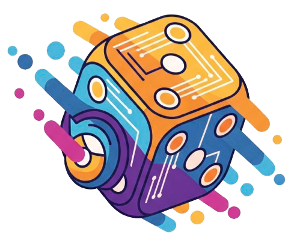

Reinforcement Learning Optimization for Large-Scale Learning
A joint project by Alibaba Future Living Lab and AI Engine Team
pioneering the future of autonomous intelligence
ROLL is pioneering the future of Reinforcement Learning (RL) with a strong emphasis on exploring and shaping innovative forms of future living powered by advanced RL technologies. We are dedicated to pushing the boundaries of large-scale learning systems and developing cutting-edge solutions for real-world applications, from agentic AI to LLM reasoning enhancement.
Key technical reports and system papers, swipe to explore more
We introduce a novel curriculum learning approach that leverages rollback mechanisms to boost agentic LLM performance. By strategically saving and loading model checkpoints during training, we enable agents to recover from failures, explore more efficiently, and achieve better long-horizon task performance.
Agentic RL is still at an early stage, and progress is less about algorithmic breakthroughs and more about end-to-end system-level co-design. We share practical lessons from tackling long-horizon credit assignment, partial observability, noisy failures, and fragile environments—not as best practices, but as hard-earned insights from real experiments.
We introduce the Agentic Learning Ecosystem (ALE), a foundational infrastructure that optimizes the production pipeline for agentic models. ALE consists of three core components working in harmony to enable efficient agent development.
RollArc is a distributed system designed to maximize throughput for multi-task agentic RL on disaggregated infrastructure, achieving significant training time reduction through intelligent workload mapping.
ROLL is an efficient, scalable, and user-friendly library designed for Reinforcement Learning Optimization for Large-scale Learning, serving tech pioneers, developers, and researchers.
Four strategic pillars bridging high-performance systems and advanced RL theory
Our work focuses on scaling Reinforcement Learning to the next frontier, optimizing everything from the underlying GPU orchestration to the mechanistic "rhythm" of LLM reasoning.
Focus: Efficiency, Scalability, and System Throughput
Focus: Policy Optimization, Credit Assignment, and Mechanistic Insights
Focus: Standardization, Environments, and Long-Horizon Training
Focus: Real-world Implementation and System-Level Co-design
Note: "The Bitter Lesson" reflects our commitment to transparency and real-world impact. We believe progress in agentic RL comes from the tight integration of systems, algorithms, and practical experience—not just chasing benchmarks.
Complete publication list
We introduce ROLL, an efficient, scalable, and user-friendly library designed for Reinforcement Learning Optimization for Large-scale Learning. ROLL features a single-controller architecture, parallel strategy modules, rollout scheduler for fine-grained sample management, and AutoDeviceMapping for flexible resource allocation across different models and training stages.
This paper systematically reviews widely adopted RL techniques for LLM reasoning through rigorous reproductions and isolated evaluations. We analyze internal mechanisms, applicable scenarios, and core principles through fine-grained experiments across datasets of varying difficulty, model sizes, and architectures. We reveal that a minimalist combination of two techniques can unlock the learning capability of critic-free policies using vanilla PPO loss.
We introduce tail batching, a novel rollout scheduling strategy for synchronous RL that consolidates prompts leading to long-tail responses into a small subset of rollout steps. RollPacker achieves a 2.03x-2.56x end-to-end training time reduction compared to veRL through holistic optimizations across all three RL stages: elastic parallelism adaptation, dynamic resource allocation, and stream-based training.
We introduce GEM (General Experience Maker), an open-source environment simulator designed for agentic LLM training. Analogous to OpenAI-Gym for traditional RL, GEM provides a standardized framework with asynchronous vectorized execution, flexible wrappers, and a diverse suite of 24 environments. We provide baselines using REINFORCE with Return Batch Normalization (ReBN) and conduct comprehensive benchmarking of PPO, GRPO, and REINFORCE.
We introduce AsyPPO, a framework that restores the critic's role in RL for LLMs while remaining efficient at scale. AsyPPO employs lightweight mini-critics trained on disjoint prompt shards to encourage diversity while preserving calibration. It leverages inter-critic uncertainty to mask advantages in low-signal states and filter high-divergence states from entropy regularization, achieving over 6% performance gains on Qwen3-4b-Base.
We present ROLL Flash, a system that extends ROLL with native support for asynchronous RL post-training. Built on fine-grained parallelism and rollout-train decoupling, ROLL Flash provides flexible programming interfaces that enable fully asynchronous training architecture with queue scheduling and environment-level asynchronous execution. It achieves up to 2.24x speedup on RLVR tasks and 2.72x on agentic tasks.
We position attention as a mechanistic blueprint of LLM reasoning, revealing a recurring preplan-and-anchor mechanism through two novel metrics: Windowed Average Attention Distance and Future Attention Influence. We introduce three novel RL strategies that dynamically perform targeted credit assignment to critical nodes (preplan tokens, anchor tokens, and their temporal coupling), achieving consistent performance gains by aligning optimization with the model's intrinsic reasoning rhythm.
We present RollArt, a distributed system designed to maximize throughput for multi-task agentic RL on disaggregated infrastructure. Built on hardware-affinity workload mapping, fine-grained asynchrony, and statefulness-aware computation, RollArc achieves 1.35-2.05x end-to-end training time reduction. We demonstrate its scalability by training a hundreds-of-billions-parameter MoE model on an Alibaba cluster with more than 3,000 GPUs.
We introduce the Agentic Learning Ecosystem (ALE), consisting of ROLL (post-training framework), ROCK (sandbox environment manager), and iFlow CLI (agent framework). We release ROME, an open-source agent trained on over one million trajectories, featuring data composition protocols and a novel Interaction-Perceptive Agentic Policy Optimization (IPA) algorithm that assigns credit over semantic interaction chunks for improved long-horizon training stability.
Agentic RL is still at an early stage, and progress is less about algorithmic breakthroughs and more about end-to-end system-level co-design. We share practical lessons from tackling core challenges—long-horizon credit assignment, partial observability, noisy failures, and fragile environments—across diverse, complex terminal environments. These techniques are not presented as best practices or final solutions, but as hard-earned insights from real experiments. We hope this helps others training agentic models in real environments, and perhaps saves them a few of the mistakes we made along the way.
We introduce a novel curriculum learning approach that leverages rollback mechanisms to boost agentic LLM performance. By strategically saving and loading model checkpoints during training, we enable agents to recover from failures, explore more efficiently, and achieve better long-horizon task performance. This approach addresses key challenges in agentic RL including exploration-exploitation trade-offs and catastrophic forgetting.